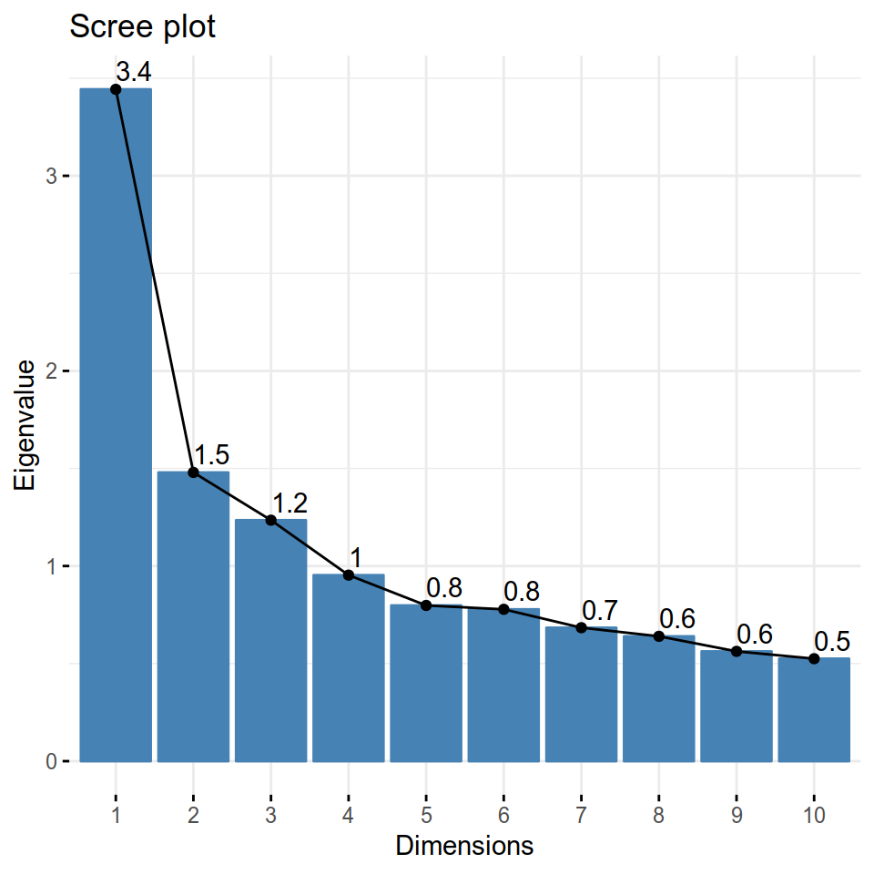

Capítulo 13 Creación de índices con Análisis de Componentes Principales (PCA)
Lecturas de referencia
-Oxford Handbook, Caps.6 y 7 - Measurement y Typologies: Forming Concepts and Creating Categorical Variables. -Abeyasekera, S. (2005). “Multivariate Methods for Index Construction.” In Household Sample Surveys and Transition Countries.367-387. New York City: DESA/UNSD. - Miller Cap. 15. Speaking about Multivariate Analyses.
13.1 Conceptos importantes
En cualquier ciencia social y sobre todo en la ciencia política. siempre debemos estar trabajando con conceptos complejos, que muchas veces son difíciles de medir. “Democracia” o “capacidad estatal” son conceptos con los que podemos trabajar siempre como cientistas políticos, pero muchas veces el poder construirlos conceptualmente es un poco complejo, ya que estos conceptos, en si mismos, son complejos.
Cuando construimos algún concepto, además de conocer su complejidad, queremos que además sea válido. La validez de constructo es precisamente que el concepto mida lo que dice medir y en disciplinas como la ciencia política siempre debe estar cuestionada, precisamente por lo que anteriormente decíamos de la complejidad de los conceptos con los que trabajamos.
Hay dos formas de generar seguridad respecto a este tipo de validez. La primera es por validez convergente, es decir, la correlación que mi medida tiene con medidas de otros y la segunda, por validez discriminativa, que reconoce que un concepto puede ser multifacético y por ende, puede que distintas variables focalicen su atención en distintos componentes o factores de este concepto.
De ahí la importancia entonces de saber cómo generar índices, ya que con una gran cantidad de variables podemos generar una que represente algún concepto que sea complejo. El análisis de componentes principales (PCA en inglés) es una técnica muy útil a la hora de generar una combinación de distintas variables. Consiste literalmente en entregar distintos puntos de vista de un mismo evento denotado por los datos. Principalmente, entrega distintos componentes conformados por una combinación lineal de las variables elegidas, que pueden ser unidos para generar una nueva variable. Un ejemplo práctico representa bien su utilidad.
13.2 Aplicación en R
El PCA es una herramienta muy útil cuando quieres representar un concepto que sea un agregado de distintas variables que tenemos a disposición. Principalmente, esto pasa cuando tenemos un concepto complejo que no podemos aproximar con sólo una variable, o una variable latente que en un conjunto de datos se podría reflejar muy bien, pero que cada uno por separado no logra representar. Un ejemplo clave de un concepto complejo de medir es la democracia. Existen distintos conceptos y distintas formas de clasificar las democracias, desde una visión mas minimalista asociada a la existencia o no de votaciones a una visión mas liberal asociada a la existencia de instituciones formales (sistema de partidos, libertad de prensa y de asociación entre otras cosas). Para esta última forma de conceptualizar la democracia (la mas utilizada en estos días realmente) parece inconcebible medir la democracia con la mera existencia de votaciones en el país. Existen hoy en día distintas mediciones de democracia a nivel internacional, tales como Polity IV o Freedom House, pero ¿qué pasa si queremos saber qué es lo que opinan los ciudadanos que votan en las democracias, sobre estas instituciones liberales que respaldan este sistema político? En países como los sudamericanos, parece aún mas importante considerar la opinión existente sobre las instituciones de sus propios países, que aunque sean democráticos, tienen algún pasado de dictadura e incluso hoy en día, votan por presidentes de extrema derecha, empoderando discursos bastante poco liberales. ¿Cómo poder saber cuál es la opinión pública de los países latinoamericanos respecto a las instituciones democráticas de sus países? El Proyecto de Opinión Pública de América Latina (LAPOP en inglés) –especializado en conducir estudios de evaluación de impacto, y producir reportes acerca de las actitudes, evaluaciones y experiencias de los individuos de países latinoamericanos (LAPOP 2018)- tienen distintas preguntas que en su conjunto, podrían aproximarse un poco a caracterizar que tanta confianza hay sobre las instituciones democráticas del país correspondiente a cada individuo. Aquí es donde el PCA es útil. La aplicación de esta herramienta en R responde a una serie de pasos que en su conjunto, son capaces de generar un índice que caracterice a cada uno de los individuos desde aquellos que sean mas propensos a tener confianza en las instituciones formales democráticas y aquellos que no. Partiremos cargando una base con las preguntas
library(tidyverse)
datos_lapop <- read_csv("00-datos/datos_lapop_pca.csv")
datos_pca_lapop <- datos_lapop %>%
select(del, pdte, trib, inst, confcon, confpdte,
confpp, confmedia, confelec, satdem, dervoto, derman) %>%
mutate_all(as.numeric)Esta data contiene 12 preguntas de la encuesta de LAPOP, realizadas a una selección de cerca de 7000 personas en 10 países latinoamericanos.
Es importante como primer paso, seleccionar las variables que nos servirán para realizar el PCA, dejando de lado todo aquello que no queramos congregar en el índice final. Para esto, generamos una nueva base que contenga sólo las variables que queramos ocupar, en este caso, para conocer cual es la opinión sobre las instituciones democráticas que tienen los latinoamericanos. Para poder seleccionar las variables y utilizar los pipes utilizaremos tidyverse.
Este paso previo, aunque en este capítulo no lo desarrollamos tanto, es el más importante a la hora de generar un PCA que realmente nos arroje algo interesante. Es importante buscar cual es el concepto o variable latente que queremos medir (en este caso, la opinión sobre las instituciones democráticas) y cómo medirla, seleccionando las variables que realmente necesitemos a la hora de construir nuestro índice. Si agregamos variables que no se condicen realmente con aquello que queremos medir, el PCA como herramienta nos arrojará un resultado que no servirá de mucho.
Ya teniendo seleccionadas las variables, el siguiente paso es observar la correlación entre ellas. Lo importante aquí es que las variables seleccionadas tengan una correlación baja entre ellas. Esto sirve también para poder elegir las variables a utilizar, ya que si existe el caso en que tengamos dos variables con alta correlación entre ellas, puede utilizarse sólo una de ellas en vez de las dos. Existen dos formas poder visualizar la correlación. Ambas denotan si existe correlación positiva o negativa entre las variable y el grado de correlación que tienen, pero la segunda entrega una gráfica de correlación que es mas cómoda a la vista. Para esta forma utilizaremos el paquete GGally.
cor(na.omit(datos_pca_lapop))
## del pdte trib inst confcon confpdte confpp confmedia
## confelec satdem dervoto derman
## [ reached getOption("max.print") -- omitted 12 rows ]
Ya con lo anterior, podemos generar un PCA con el paquete FactoMineR de la siguiente forma:
El PCA nos entrega las dimensiones que contienen en en distintas medidas, todas las variables que deseamos agregar. Además, entrega la misma cantidad de dimensiones que las variables que ocupamos, por lo que en este caso tenemos 12 dimensiones. Cada dimensión tiene su valor propio o eigen value y la varianza porcentual, ambos valores que podemos encontrar con el paquetefactoextra.
library(factoextra)
get_eig(pca_1)
## eigenvalue variance.percent cumulative.variance.percent
## Dim.1 3.44 28.7 29
## Dim.2 1.48 12.3 41
## [ reached getOption("max.print") -- omitted 10 rows ]De forma mas gráfica, podemos tambien ver cuales son los eigen values de cada componente o dimensión. Para poder construir el índice, lo importante es elegir los componentes que tengan un eigen value > 1. En este caso, elegiremos los tres primerios componentes.

¿Qué pasa si queremos ver en que medida está compuesta cada dimensión por las variables?Podemos generar un gráfico que nos diga la composición en porcentaje de cada variable, como en el ejemplo:
fviz_contrib(pca_1, choice = "var", axes = 1)
fviz_contrib(pca_1, choice = "var", axes = 2)
fviz_contrib(pca_1, choice = "var", axes = 3)


Para poder condensar los componentes elegidos en una sola variable, es necesario sumar los productos entre los eigen values y la varianza porcentual que cada dimensión elegida y dividirlo por la varianza porcentual acumulada (que obtuvimos antes con factoextra:get_eig) de la siguiente forma:
datos_pca_final <- pca_1$ind$coord%>%
as_tibble()%>%
mutate(pca_01 = (Dim.1 * 28.692289 + Dim.2 * 12.329336 + Dim.3 * 10.290312) /51.31194)
datos_lapop <- datos_lapop %>%
bind_cols(datos_pca_final %>% select(pca_01))Igualmente, el resultado que entrega el PCA no se encuentra en ninguna escala usual, por lo que utilizaremos una función para reescalar de 0 a 1 el resultado del PCA. Así, podemos agregarla a la base inicial.
rescale01 <- function(x) { rng <- range(x, na.rm = TRUE)
(x - rng[1]) / (rng[2] - rng[1])}
datos_lapop <- datos_lapop %>%
mutate(index_1 = rescale01(pca_01))%>%
select(index_1, everything())Asi, encontramos una forma de condensar distintas variables en una y poder saber cual es la opinión que en general tienen los latinoamericanos de las instituciones democráticas y su funcionamiento. Esto nos permite comparar entre cada individuo su opinión, o incluir este valor en algún modelo ya que nos entrega un variable contínua que ya está reescalada. Por ejemplo, podemos sacar el promedio por país, para hacer una comparación inicial de cada país, del tipo:
datos_pais <- datos_lapop %>%
group_by(paisnom) %>%
summarise(prompais = mean(index_1))%>%
arrange(prompais)
datos_pais
## # A tibble: 10 x 2
## paisnom prompais
## <chr> <dbl>
## 1 Colombia 0.399
## 2 Brasil 0.400
## 3 Chile 0.434
## 4 Peru 0.435
## 5 Paraguay 0.443
## 6 Argentina 0.462
## 7 Venezuela 0.467
## 8 Bolivia 0.479
## 9 Ecuador 0.511
## 10 Uruguay 0.555